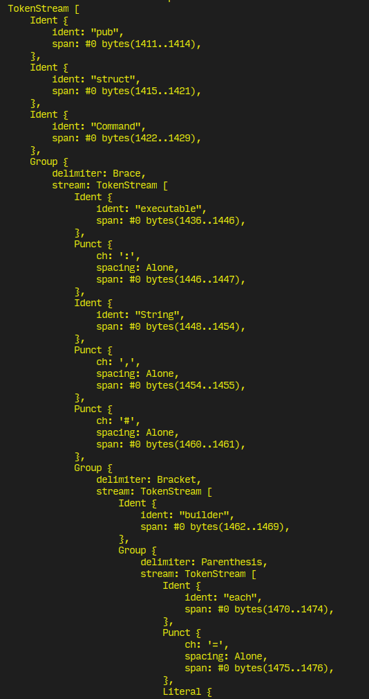

Rust 宏分两种：declarative macro 和 procedural macro, 前者匹配宏参数, 利用匹配到的变量组合新的 Rust 代码, 后者操作 TokenStream 生成新的 TokenStream, 无论哪种形式都是先捕获后组合, 区别在于后者处理得更好看些, 在代码上加上修饰/标记符比给宏传参数更具扩展性, 也便于阅读. 本文记录了 proc-macro-workshop 第一个项目 builder 的解决过程.
定义一个宏用来打印变量
#[macro_export]
macro_rules! debug {
(@print $a:expr)=>{
{
eprintln!("{}::{}::{}: {:#?}", file!(), line!(), stringify!($a), $a);
}
};
[$a:expr]=>{
{
$crate::debug!(@print $a);
}
};
[$a:expr,$b:expr]=> {
{
$crate::debug!(@print $a);
$crate::debug!(@print $b);
}
};
[$a:expr,$($b:tt)*]=>{
{
$crate::debug!($a);
$crate::debug!($($b)*);
}
};
}
fn main(){
let a = 1;
let b = "tiempo";
let c = 1.23;
debug![a, b, c];
debug!(45, 6.78);
}
要点：
Declarative Macro 的关键在于, 编译器找到匹配宏参数的模式, 按照=>之后的模板生成 Rust 代码
@ 表示一个标签, 用来标记辅助宏
[] 和 () 似乎是等价的, 但这种细节我们无需在意
我这么写是为了模仿 TT Muncher, 简单理解为递归
$crate 是考虑到卫生(Hygiene)
基本语法参考 Macros By Example
用 proc_macro 库的#[proc_macro_derive] 标记函数之后, Rust 编译器将 tokenized 的 token 封装在 TokenStream 上交给用户, 目前主流上用 syn 处理 TokenStream, 自己组织 AST, 再用 quote 生成新的 TokenStream, 后者最终被编译器转化成 Rust 代码.
TokenStream 的结构：

以第 7 个测试为例, 要将
#[derive(Builder)]
pub struct Command {
executable: String,
#[builder(each = "arg")]
args: Vec<String>,
#[builder(each = "env")]
env: Vec<String>,
current_dir: Option<String>,
}
最终展开成：
pub struct Command {
executable: String,
#[builder(each = "arg")]
args: Vec<String>,
#[builder(each = "env")]
env: Vec<String>,
current_dir: Option<String>,
}
pub struct CommandBuilder {
executable: ::std::option::Option<String>,
arg: ::std::option::Option<Vec<String>>,
env: ::std::option::Option<Vec<String>>,
current_dir: Option<String>,
}
impl CommandBuilder {
pub fn executable(&mut self, arg: String) -> &mut Self {
self.executable = Some(arg);
self
}
fn arg(&mut self, arg: String) -> &mut Self {
self.arg.as_mut().unwrap().push(arg);
self
}
fn env(&mut self, arg: String) -> &mut Self {
self.env.as_mut().unwrap().push(arg);
self
}
pub fn current_dir(&mut self, arg: String) -> &mut Self {
self.current_dir = Some(arg);
self
}
pub fn build(
&self,
) -> ::std::result::Result<Command, ::std::boxed::Box<dyn std::error::Error>> {
Ok(Command {
executable: self.executable.as_ref().unwrap().clone(),
args: self.arg.as_ref().unwrap().clone(),
env: self.env.as_ref().unwrap().clone(),
current_dir: self.current_dir.clone(),
})
}
}
impl Command {
pub fn builder() -> CommandBuilder {
CommandBuilder {
executable: None,
arg: Some(::std::vec::Vec::new()),
env: Some(::std::vec::Vec::new()),
current_dir: None,
}
}
}
需要做到：
syn::parse_macro_input , 阅读 syn 源码DeriveInput, 把 input 转化成这个格式, 打印出来, 逐个遍历, 完成测试 1-6DeriveInput, 自定义结构体, 给它实现 syn::parse::Parse trait, 做到直接将 TokenStream 转化为你的数据结构quote, 利用你自己定义的数据结构存储的信息重新生成一个 TokenStreamspan代码：https://github.com/tenheadedlion/proc-macro-workshop
我发现 syn 作者的另一个库 thiserrror 可以当作 syn 写宏的教材. 参照它的结构：TokenStream -> ast 模块 -> 验证/辅助模块 -> expand 模块 -> TokenStream, 我写了 debug 1-4, 结束练习, 因为 Rust 宏虽然一开始看起来很复杂, 写多了就跟写爬虫一样.